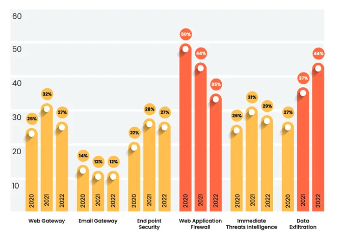
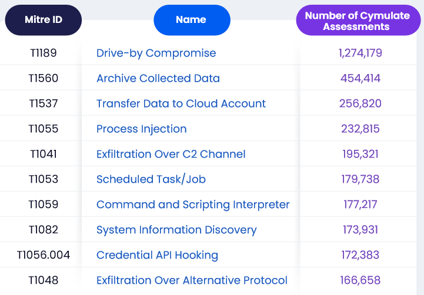

La nube y el correo, mal configurados son los principales problemas de ciberseguridad
El puntaje de riesgo promedio para la empresa empeoró este año pasado debido a que las empresas no logran adaptarse a las técnicas de exfiltración de datos y proteger adecuadamente las aplicaciones web.
28 March 2023
El riesgo efectivo de exfiltración de datos aumentó desde 30/100 en 2021 a 44/100 en 2022. Esta medición se basa en la clasificación de la empresa Cymulate, que analizó los datos en 1 millón de pruebas de penetración, incluidas 1,7 millones de horas de pruebas de ciberseguridad ofensivas dentro de entornos de producción.
En su informe "Estado de la eficacia de la ciberseguridad de 2022", publicado el 28 de marzo, la empresa señaló que existen varios problemas persistentes que conducen a un mayor riesgo. Por un lado, mientras muchas empresas están mejorando su adopción y el rigor de las políticas de red y de grupo, los atacantes se están adaptando para eludir tales protecciones, según el informe.
Además, los conceptos básicos continúan rezagados: la empresa descubrió que cuatro de los 10 CVE principales identificados en los entornos de sus clientes tenían más de dos años. Estos incluyen la vulnerabilidad de validación de firma WinVerifyTrust de alta gravedad (CVE-2013-2900), que puede permitir que los ejecutables maliciosos pasen las comprobaciones de seguridad, y una vulnerabilidad de corrupción de memoria en Microsoft Office (CVE-2018-0798).

Sin embargo, hay buenas noticias. Los datos de las evaluaciones de seguridad indican que todas las empresas han mejorado los puntajes de riesgo para la detección de malware en las principales plataformas, y muchos ataques están bloqueados por gateways.
"La ciberseguridad debe convertirse en un proceso tratado como cualquier otro proceso empresarial, con controles y equilibrios y una revisión periódica. El CFO nunca permitiría que los libros permanecieran cerrados excepto una vez al año, sin embargo, los sistemas que albergan todo ese dinero como datos solo se revisan de forma rutinaria durante una prueba de penetración anual", dijo Mike DeNapoli, director de Cymulate.
Todo esto se produce en el contexto de que las empresas se centran cada vez más en proteger toda su superficie de ataque, mejorar la resistencia a los ataques cibernéticos y prevenir la interrupción de los sistemas de información. Como resultado, los servicios y productos de ciberseguridad que reducen la complejidad se han vuelto más populares, mientras que las grandes empresas de tecnología se han lanzado al ruedo, como el lanzamiento de Microsoft de Defender External Attack Surface Management en agosto y la compra de Randori por parte de IBM en junio. El tiempo dirá si estas tendencias moverán la aguja en el riesgo.
Mientras tanto, el análisis de Cymulate de un año de pruebas de ciberseguridad ofensivas también encontró que la nube y el correo electrónico continúan brindando espacios de pruebas ricos para los delincuentes informáticos.
El informe también mostró que las diferentes industrias tienen diferentes fortalezas y debilidades. Los sectores de la educación y la hostelería, por ejemplo, tenían el mayor riesgo de exfiltración de datos, mientras que las protecciones contra las amenazas más inmediatas eran las más bajas en el sector de la tecnología. Tanto las organizaciones tecnológicas como las gubernamentales tenían una protección de firewall de aplicaciones web peor que el promedio.
Ataques desde las nubes populares
Los atacantes han cambiado algunos aspectos de sus ataques del uso de servicios populares para compartir archivos, como Dropbox y Box para evadir los filtros de archivos adjuntos de correo electrónico y otras tecnologías de seguridad, al uso de una infraestructura de nube más genérica, como Amazon y Azure. Las empresas tienen más dificultades para bloquear datos de proveedores de servicios grandes y confiables, que sirven como columna vertebral para muchos sitios web y servicios en la nube grandes, dice DeNapoli.
"Estas métricas se aplican a cientos de intentos de eliminar datos que deberían considerarse 'controlados' por la organización", dice. "Este aumento significa que las organizaciones tienen menos control para evitar que los datos comerciales confidenciales, de identificación personal y otros datos controlados se eliminen de la organización de manera no autorizada".
Las principales tácticas más exitosas utilizadas por los atacantes incluyen atacar a los usuarios a través de aescenarios de drive-by, exfiltración de datos y transferencia de datos a través de cuentas en cloud, tales como AWS o Azure.

Correo electrónico mal configurado
Casi la mitad de las 10 principales exposiciones descubiertas por las pruebas de penetración de Cymulate involucraron una falta de seguridad para la infraestructura básica de TI. Las simulaciones descubrieron que los problemas comunes incluían el no reconocimiento de dominios de phishing, una falla en la configuración de DNSSEC y la falta de dos tecnologías: Domain-based Message Authentication, Reporting, and Conformance (DMARC) y Sender Policy Framework (SPF), que pueden ayudar a detener ataques basados en correo electrónico.
En general, las empresas han tardado en implementar tecnologías críticas de seguridad e integridad del correo electrónico, como DMARC, SPF y una tercera tecnología, Domain Keys Identified Mail (DKIM), que juntas pueden ayudar a prevenir el éxito del phishing y el fraude de marca. Si bien las empresas que implementan registros DMARC, DKIM y SPF pueden protegerse mejor contra ataques basados en correo electrónico, los estándares tecnológicos solo son realmente efectivos si ambos lados de un intercambio los utilizan, dice DeNapoli.
Fuente: DarkReading